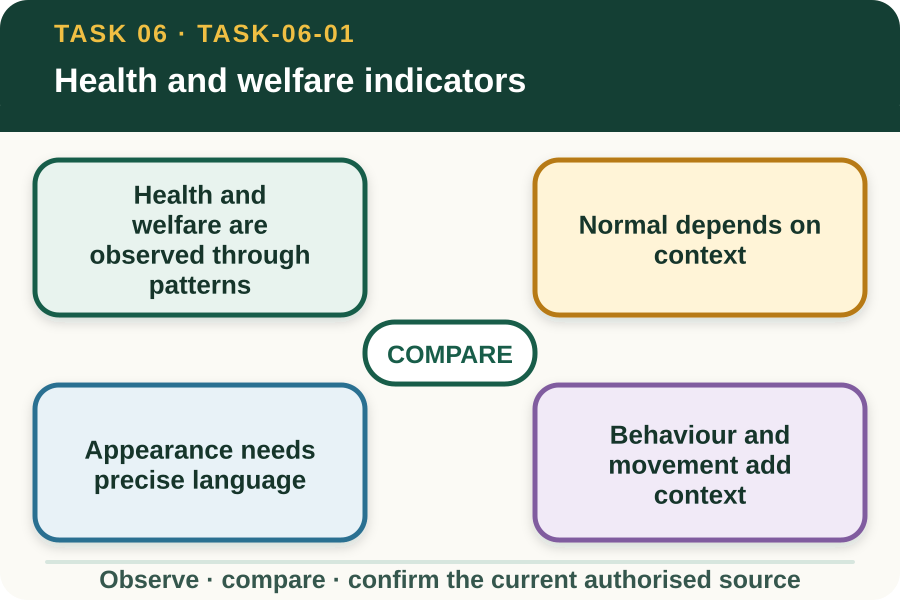
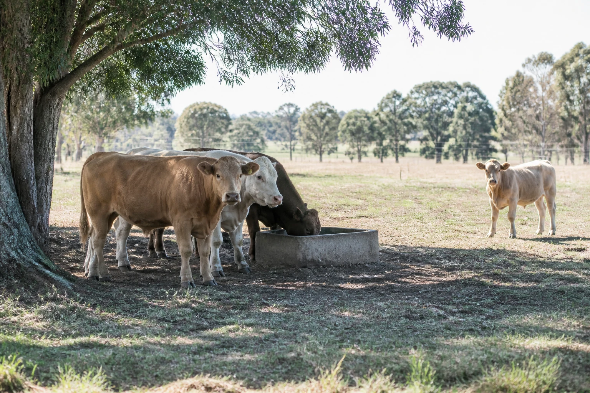
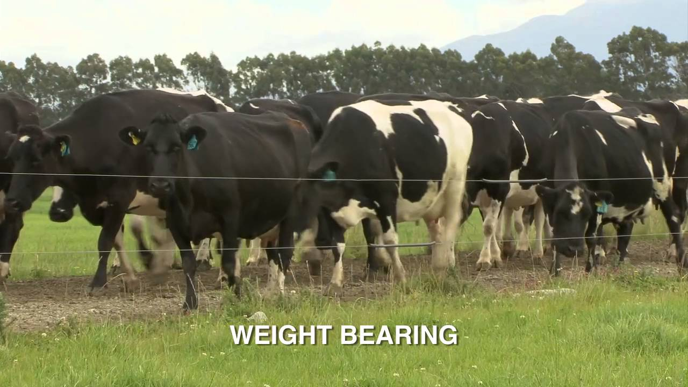

Learning purpose
Compare normal and changed appearance, behaviour, movement, intake and environment using objective language.
Task 6 · Lesson 1 of 4
Compare normal and changed appearance, behaviour, movement, intake and environment using objective language.
Learning purpose
Compare normal and changed appearance, behaviour, movement, intake and environment using objective language.
Success criteria
Learning boundary
Supplementary learning and formative practice only. Current RTO assessment, local procedures and authorised supervision control real work.

Livestock health and welfare monitoring draws on patterns across appearance, behaviour, movement, group position, intake-related observations and environmental conditions. A single cue may be important, but it rarely establishes cause by itself.
The observer's role is to notice and communicate change against an authorised baseline. Diagnosis and clinical judgement require evidence, expertise and responsibility that an online lesson cannot provide.
A normal reference comes from current species information, enterprise records, supervisor knowledge and comparable observations. Time of day, weather, life stage, production context and recent workplace activity can influence what is seen.
Do not build a permanent rule from one classroom example. Instead, state which baseline was used, how the observation context matches it and which differences require confirmation.
Appearance observations can include visible coat or skin condition, posture, symmetry, obvious injury or changes around the eyes and face, when those features can be viewed from an approved position.
Words such as healthy, diseased, poisoned or dehydrated are conclusions unless established by authorised assessment. Describe colour, position, swelling, discharge, visible damage or other evidence only as specifically as the observer can support.
Behavioural evidence can include response to surroundings, interaction with the group, repeated actions and change from an earlier pattern. Movement evidence can include pace, balance, willingness to move and visible asymmetry.
A learner does not test a suspected problem by approaching, provoking or moving an animal. Observation continues only within the approved task, position and stop conditions set by the supervisor.
Fictional worked example
Observed evidence: At fictional Green Hollow Farm, an observation sheet shows that animal R08 stayed with the group during yesterday's check. Today, from the approved viewing point, Asha records R08 standing apart for four timed intervals and placing noticeably less weight on one rear limb while moving. Decision and reason: Asha cannot identify the cause or severity from those cues. Safe action: She reports the identifier, comparison, repeated pattern, movement description and time. Result: The authorised supervisor reviews the concern. Next check or record: Asha enters the facts and records the direction received without adding treatment advice.

Shelter access, surface condition, weather, water-point observations, crowding, noise and recent work can influence what livestock display. Environmental evidence helps the authorised reviewer understand exposure and urgency.
The learner should not assume that one environmental feature caused the change. Record what was present, where it was and how it coincided with the observed pattern.
When a changed indicator may affect welfare, report promptly through the current workplace path and remain within the confirmed role. Clear communication is more useful than withholding a concern until a diagnosis seems certain.
Website practice develops vocabulary and structure only. It neither replaces routine enterprise monitoring nor establishes that the learner can assess health and welfare under formal RTO conditions.

External media loads only after you choose it.
Source-linked video
Why watch: Practise separating a visible movement cue from a diagnosis or treatment decision.
Watch for: Which visible changes in posture or movement can be recorded objectively before a concern is escalated?
Formative practice
Each option explains the consequence. These answers save only on this device.
Written application
Apply and keep a learning record
Compare two fictional teacher-provided livestock images or records. List matching context, changed appearance or behaviour cues and the facts that must be referred. Do not diagnose or propose a response.
Learning record: A supplementary comparison table with baseline, visible change, context and authorised reporting fields.
Lesson responses and the activity are formative learning only. Formal sufficiency and competence remain with the current RTO process.
Source basis: AHCLSK222 Release 1 regular health-and-welfare checking and reporting requirements, supported by the current NESA livestock focus-area concepts and authorised revision resource. Current enterprise baselines, workplace procedures and authorised animal-health advice control interpretation and response.